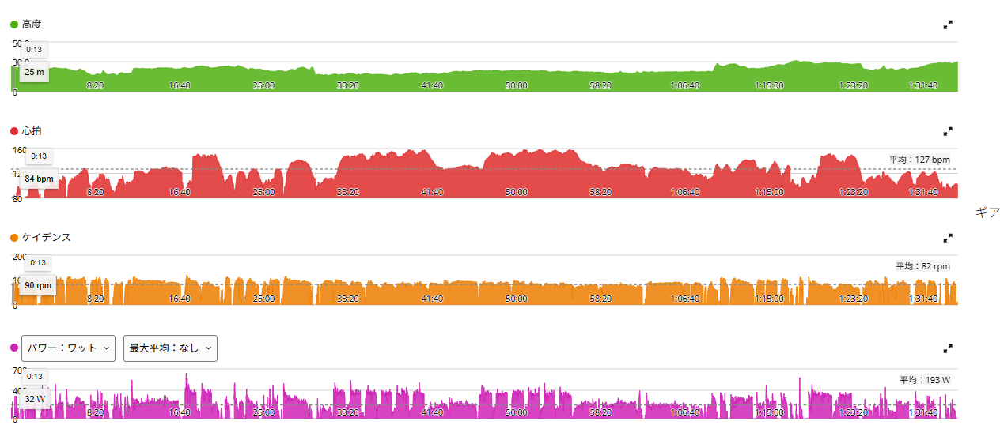
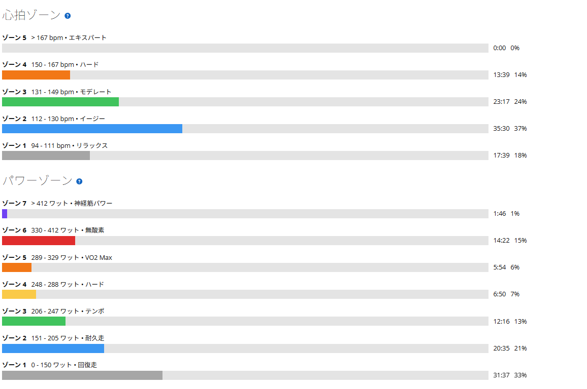

60/30でケイデンスを振った。85rpmと100rpmは同じ350Wでも別物
今日は渡良瀬遊水地方面で60秒ON／30秒OFF。前回も同じメニューをやったが、今回は出力を揃えることではなく、ケイデンスを変えると高出力の出しやすさがどう変わるのかを試してみた。
前日のローラーでは25分×2を251W／249Wで走っている。連日のONではあるが、脚の状態に問題はなかったので予定通り外へ。

47.29km・NP244W・TSS122.0
- 全体47.29km / 1時間33分40秒
- 負荷平均193W / NP244W / IF0.886 / TSS122.0
- 心拍・回転平均127bpm / 最大159bpm / 平均82rpm
- 環境平均30.3℃ / 推定発汗1,429ml
気温は平均30.3℃、発汗量は1,429ml。まだまだ普通に暑い。
最初は場所探しから
最初に60/30をやろうとした場所では、1本走るたびにUターンが必要になった。これでは30秒のレスト中に余計な操作が入るし、メニューとしてやりにくい。2本ほど試したところで諦めて、いつものように走り続けながら反復できる場所へ移動した。
こういうのは実際に走ってみないと分からない。地図で見て良さそうでも、60秒踏んで30秒休むという区切りに合うかどうかは別の話だった。
60/30を6本×2セット。361Wと351W
- 1セット目のON平均約361W
- 2セット目のON平均約351W
- 構成60秒ON／30秒OFF × 6本、セット間レスト約5分
ここで先に断っておくと、2セット目が10W低いのは疲労で垂れたわけではない。後半のケイデンス低下は意図的なもので、回転数を変えたらどうなるかを見るために自分で落としている。前回のように「2本を揃える」ことを狙った日ではない。
ケイデンスを意図的に変えた。85rpmと100rpmは別物
今回やりたかったのはここである。高めのケイデンスではパワーを作りやすい。特に100rpmを超えると、400Wくらいまでならかなり簡単に出てしまう。ただし最初の数秒で必要以上に上がりやすく、そのツケが後から来る感じがある。実際、メニュー前に試したときも入りがかなり高くなった。
一方で85rpm付近まで落とすと状況が逆になる。パワーは暴れにくくなるが、私の場合は350Wあたりから急に維持が難しくなる感覚があった。
- 100rpm超400Wも簡単に出る。でも入りが高くなり、後に響く
- 85rpm付近暴れにくい。でも350Wを超えるとトルク的に重い
「回せば出る。でも出すぎる」「抑えれば安定する。でも今度は重い」。同じ350W前後でも、ケイデンスによって感触がまるで違う。数字が同じなら中身も同じ、とはならないということが、はっきり体感できた。
今の答えは90rpm前後かもしれない
今回の感触だけで結論を出すつもりはない。ただ、60秒の高出力を繰り返すなら今の私には90rpm前後が使いやすそうだと感じた。85rpm付近では350Wを超えてからトルク的にかなり重い。逆に100rpmを超えると400Wまで簡単に跳ねてしまい、60秒を12回繰り返すには少し攻めすぎる。そう考えると、その中間にある90rpm台が面白い。
次回はケイデンスをあえて変えるのではなく、90〜95rpmあたりに揃えて350〜365Wを狙ってみたい。そこで2セット目まで出力が揃うなら、私にとっての60/30の「使いやすい回転数」がかなり見えてきそうだ。
- 8月19日ON 374W／364W ・ ゾーン5以上 17分26秒 ・ TSS113.1
- 8月26日ON 359W／364W ・ ゾーン5以上 17分04秒 ・ TSS103.2
- 今日ON 361W／351W ・ ゾーン5以上 22分02秒 ・ TSS122.0

並べてみると面白い。ON平均は今日が一番低いのに、高出力側で使った時間は3回の中でいちばん長い。TSSも122.0で最大である。場所探しで2本試した分と、全体時間が長かった分が効いている。平均値だけ見ていると、こういうところは見落とす。
今日やってみて思ったこと
以前は「何W出せたか」を見ることが多かった。でも最近は、同じパワーでもどうやって出したかの方が面白くなってきた。85rpmで350Wを出すのと、100rpmで350Wを出すのでは体感が全然違う。
しかも高回転なら出力を上げること自体は簡単でも、それがメニュー全体として正解とは限らない。一発の数字ではなく、最後まで繰り返せる出し方を探す。60/30は短いメニューだけど、こういう実験をすると意外と奥が深い。
次に見るポイント
- 回転数の固定90〜95rpm付近に揃えて2セット走れるか
- 入り方最初から400Wへ飛び出さず、350〜365W付近へ滑らかに入れるか
- 2セット目1セット目だけでなく、最後まで同じように出せるか
- 仮説の検証今回の答えが「90rpm前後」なのか、また別の発見が出るか